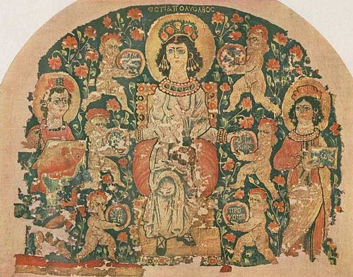
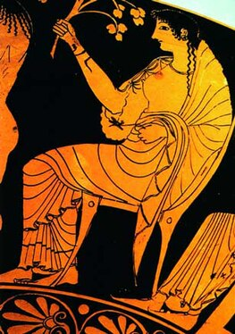

Ге́стия (др.-греч. Ἑστία) — в древнегреческой мифологии юная богиня семейного очага и жертвенного огня. Старшая дочь Кроноса и Реи, сестра Зевса, Геры, Деметры, Аида и Посейдона. Соответствует римской Весте. Является одной из двенадцати олимпийских богов. Сразу после рождения Кронос проглотил Гестию и всех последующих своих детей, кроме самого младшего, Зевса, которого спасла Рея, дав Кроносу вместо него завёрнутый в пелёнки камень. Когда Зевс вырос, он хитростью заставил Кроноса изрыгнуть поглощённых им своих братьев и сестёр. Гестия, как и Афина и Артемида, неподвластна Афродите. Посейдон и Аполлон добивались её руки, но она дала обет целомудрия и жила у своего брата Зевса. Её изображение было в афинском Пританее. Названа «владеющей лавром пифийским». Её статуя у дороги в Фессалии. Её жертвенник в роще Зевса Гомория близ Эгия (Ахайя). Основала город Кносс. Ей приносилась жертва перед началом всякого священнодействия, всё равно, носило ли последнее частный или общественный характер, благодаря чему образовалась и поговорка «начинать с Гестией», служившая синонимом успешного и правильного приступа к делу. Потому же она почиталась вместе с Гермесом, зачинателем жертвоприношений. С Гестией связана легенда о Прометее, титане, создавшем людей. Прометей выкрал огонь у Гестии (или же она сама его отдала) и передал людям, благодаря чему те стали не только физической, но и духовной копией богов (поскольку огонь был только у богов).

Гобелен «Гестия, полная благословений», Египет (VI век).
Наиболее известным древним изображением богини является краснофигурная вазопись на килике Ольтоса (VI век до н. э.), где Ганимед наливает вино Зевсу, а Гестия держит цветок и ветку с плодами (предположительно целомудренного дерева). Хранится в Национальном археологическом музее Тарквинии. Гестия представлена среди гостей на керамической чаше VI века до н. э. с изображением свадьбы Пелея и Фетиды (собрание Британского музея). В Художественном музее Уолтерса хранится фрагмент эллинистического рельефа (I век до н. э. – I век н. э.) с изображением шествия двенадцати олимпийских богов. На нём Гестия несёт скипетр. На гобелене «Гестия, полная благословений», созданном в Египте в VI веке, богиня изображена с гранатами в руках и в головном уборе и серьгах в форме граната. Рядом с ней две служанки и шесть ангелов с дисками, на которых написаны слова «радость», «много вкусной еды и питья», «процветание», «богатство», «благословение», «добродетель». Гобелен находится в коллекции исследовательского института Думбартон-Оукс в Вашингтоне.

Фрагмент килики Ольтоса с изображением Гестии (VI век до н. э.).